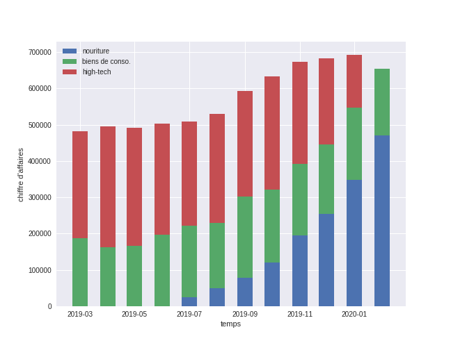
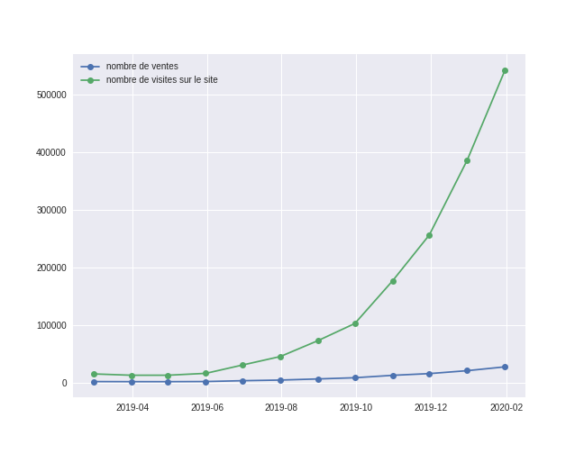
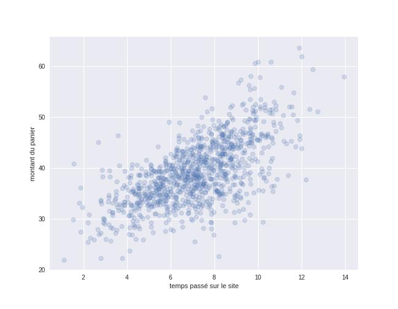

Le contexte et le besoin métier
Le Grand Marché est une enseigne de grande distribution qui livre à domicile les commandes passées en ligne. Deux demandes du même mois, deux publics différents. Frédéric, directeur marketing, doit présenter à la direction d'où vient la baisse du chiffre d'affaires et comment la situation va évoluer, en cinq diapositives maximum, un graphique par diapositive, pour un auditoire non technique. Pauline, elle, a besoin d'un tableau de bord Excel opérationnel sur les clients affiliés, qu'elle pourra mettre à jour elle-même chaque mois.
Les données : sources, qualité, limites
Pour le rapport à Frédéric, les graphiques sont déjà générés automatiquement par un script interne : le travail porte sur la sélection, l'interprétation et la mise en récit, pas sur la production des visuels eux-mêmes. Pour le tableau de bord de Pauline, les données brutes des clients affiliés de février sont fournies à compléter dans une trame déjà en place pour janvier, avec obligation de conserver les formules actives plutôt que de les figer en valeurs.
La démarche
La vraie contrainte du rapport marketing n'est pas technique, elle est éditoriale : Frédéric demande de couvrir huit sujets différents (répartition des ventes, panier moyen, quatre évolutions distinctes, temps passé sur le site, projection) en cinq graphiques. Plutôt que de sacrifier des sujets, plusieurs demandes se combinent dans un même graphique quand leur lecture croisée le permet.


Sur ce dernier point justement, croiser l'évolution du trafic et celle des ventes sur un même graphique répond en une seule diapositive à deux demandes distinctes de Frédéric, l'évolution des visites et celle du ratio achats/visites, tout en rendant visible un écart qu'aucune des deux courbes prise seule n'aurait montré aussi clairement.
Pour Pauline, la logique est inverse : le format compte autant que le contenu. Le tableau de bord garde ses formules actives, une structure réutilisable d'un mois sur l'autre, et cinq graphiques distincts incluant un graphique en secteurs, pour que la lecture reste immédiate sans qu'elle ait besoin de rouvrir le calcul sous-jacent.
Les résultats et l'impact

Le high-tech représentait près de la moitié du chiffre d'affaires avant l'arrêt stratégique de ce segment, décidé l'année précédente : sa disparition explique directement la baisse de CA que Frédéric cherchait à comprendre, pas une perte de clientèle générale. Le trafic du site augmente nettement plus vite que les ventes depuis septembre, un écart croissant qui pointe vers une baisse du taux de conversion plutôt qu'un problème d'audience, une nuance importante pour orienter l'action correctement.
Le panier moyen suit une logique de seuil plus que de pente continue : sous 6 minutes de navigation, il reste proche de 30 à 40 €, au-delà il s'approche de 50 €, avec une dispersion assez large pour rappeler que ce n'est pas une règle systématique. Côté clients affiliés, la nourriture représente 62,8 % du chiffre d'affaires de février contre 37,2 % pour les biens de consommation, une répartition cohérente avec la stratégie de recentrage décidée par l'entreprise.
Les limites et les prochaines pistes
Frédéric demandait aussi une projection chiffrée du chiffre d'affaires pour les prochains mois. Le support livré propose des axes stratégiques argumentés, compenser l'arrêt du high-tech, améliorer la conversion, augmenter la valeur client, mais pas de graphique de projection à proprement parler : une limite assumée plutôt qu'une réponse habillée pour faire illusion.
Les pistes que je recommande : construire une projection simple à partir de la tendance des derniers mois pour la prochaine itération du rapport, et croiser le seuil des 6 minutes identifié sur le panier moyen avec des actions concrètes de parcours utilisateur, pour transformer une observation statistique en levier actionnable.